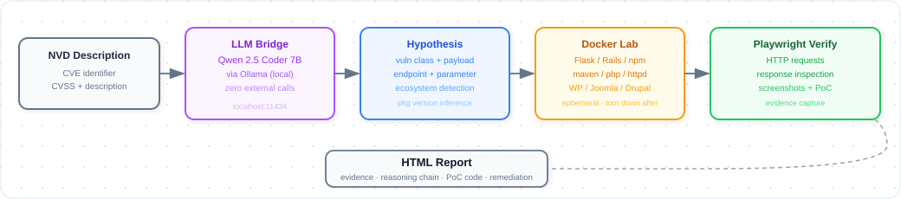

binoracle
Investigación autónoma de exploits CVE y reversing binario — 100% local


English · Español · Docs · Arquitectura
AVISO LEGAL — binoracle es una herramienta de investigación y educación. Todos los laboratorios CVE se ejecutan contra contenedores Docker que tú creas localmente. Nunca la uses contra sistemas que no sean tuyos o para los que no tengas permiso escrito explícito.
¿Qué es binoracle?
binoracle es un asistente de investigación de seguridad totalmente local y offline-first con dos motores principales:
| Motor | Qué hace |
|---|---|
| Motor CVE | Obtiene un CVE de NVD → pide a Qwen 2.5 Coder (LLM local) que genere hipótesis de exploit → levanta un laboratorio Docker → verifica el exploit con Playwright → genera un informe HTML profesional con capturas de pantalla |
| Motor RE Binario | Analiza ELF/PE/Mach-O/APK/WASM/Go/Rust/.NET/JS/EVM/SQLite — análisis estático, decompilación, generación de exploits, cadenas ROP, format strings, ataques de heap — todo offline |
Ningún dato sale de tu máquina. El LLM corre localmente via Ollama (Qwen 2.5 Coder 7B). Los laboratorios Docker son efímeros. Los informes se quedan en disco.
Inicio rápido
# 1. Instalar binoracle
pip install binoracle
# 2. Instalar Ollama + descargar el modelo (macOS / Linux)
curl -fsSL https://ollama.com/install.sh | sh
ollama pull qwen2.5-coder:7b
# 3. Configurar
export BINORACLE_BACKEND=openai
export BINORACLE_BASE_URL=http://127.0.0.1:11434/v1
export BINORACLE_MODEL=qwen2.5-coder:7b
# 4. Investigar un CVE de forma autónoma
binoracle cve CVE-2025-27516
# 5. Analizar un binario
binoracle triage ./binario_objetivo
# 6. Cadena de exploit completa
binoracle pwn ./binario_vulnerable
Motor CVE
El motor CVE es completamente autónomo — no se proporcionan pistas externas. El LLM local lee la descripción de NVD y genera todas las hipótesis de exploit desde cero.

Clases de vulnerabilidad soportadas
| Clase | Scaffolders | Auto-PoC |
|---|---|---|
| SSTI (Jinja2, Twig, Smarty) | pip / gem | ✓ |
| SQLi (GET/POST/JSON/header) | pip / gem / php / maven | ✓ |
| Path Traversal / LFI | pip / gem / npm / httpd | ✓ |
| RCE / Inyección de comandos | pip / gem / npm | ✓ |
| XSS (Reflected / Stored) | pip / npm | ✓ |
| SSRF | pip / npm | ✓ |
| XXE | java / maven | ✓ |
| Deserialización | java / gem (Marshal) | ✓ |
| Auth Bypass / IDOR | pip / gem / npm | ✓ |
| Subida de ficheros / Webshell | pip | ✓ |
| Open Redirect | pip / gem / npm | ✓ |
| CSRF | pip / gem | ✓ |
| Plugins WordPress (100+) | WP Docker | ✓ |
| Extensiones Joomla | Joomla Docker | ✓ |
| Módulos Drupal | Drupal Docker | ✓ |
| Apache httpd | httpd Docker | ✓ |
| Java/Maven (Spring, Struts) | maven | ✓ |
| PHP (paquetes Composer) | php | ✓ |
| npm / Node.js / Next.js | npm | ✓ |
| Gems Ruby | gem | ✓ |
# CVE individual
binoracle cve CVE-2025-27516
# Lote (paralelizado)
binoracle cve-batch CVE-2025-27516 CVE-2024-23334 CVE-2025-59681
# Informe solo en inglés
binoracle cve CVE-2025-27516 --lang en
Motor de Reversing Binario
50+ familias de exploit — completamente automatizadas
binoracle pwn ./binario
| Familia | Técnicas |
|---|---|
| Stack | ret2win · ret2libc · ret2plt · ret2csu · SROP (x86-64/x86-32/aarch64) · stack pivot · cadenas ROP |
| Heap | tcache dup · fastbin dup · UAF · double-free · House-of-Force · House-of-Spirit · House-of-Orange · House-of-Mind · large bin attack · unsafeunlink · Botcake |
| Format String | escritura arbitraria con %n · sobrescritura GOT · fuga de canary · fuga de PIE |
| Bajo nivel | shellcode (NX off) · limpieza de bad-chars · exploit IO_FILE · DL-resolve · secuestro GOT |
| Canary | fuga + reutilización · fuerza bruta en fork |
| PIE | sobrescritura parcial · cadena de fugas |
Análisis estático — paridad REA + más
binoracle triage ./binario # mitigaciones, símbolos, importaciones
binoracle decompile ./binario # multi-motor: Ghidra, radare2, angr, pwndbg
binoracle rop ./binario # búsqueda de gadgets ROP + síntesis de cadenas
binoracle chain ./binario # cadena de exploit completa
Servidor MCP (~100 herramientas)
binoracle mcp-server
// claude_desktop_config.json
{
"mcpServers": {
"binoracle": {
"command": "binoracle",
"args": ["mcp-server"]
}
}
}
Arquitectura

Informes
Cada investigación genera un informe HTML profesional con:
- Resumen ejecutivo con puntuación CVSS y badge de severidad
- Hipótesis del LLM y cadena de razonamiento
- Configuración del laboratorio y scaffold
- Capturas de pantalla de Playwright en cada paso de verificación
- Código PoC completo (curl / Python / pwntools)
- Recomendaciones de remediación (concretas y accionables, en español e inglés)
Comparación con REA
| Funcionalidad | binoracle | REA |
|---|---|---|
| LLM local (Ollama) | ✓ | ✗ |
| CVE → laboratorio Docker → PoC verificado | ✓ | ✗ |
| Capturas Playwright como evidencia | ✓ | ✗ |
| Labs WordPress / Joomla / Drupal | ✓ | ✗ |
| ret2win / ret2libc / SROP | ✓ | ✓ |
| Ataques heap (tcache/fastbin/UAF/HoX) | ✓ | ✓ |
| Explotación format string | ✓ | ✓ |
| Síntesis de cadenas ROP | ✓ | ✓ |
| Servidor MCP (~100 herramientas) | ✓ | ✗ |
| Corpus de práctica (40+ binarios) | ✓ | ✓ |
| APK / .NET / WASM / EVM | ✓ | parcial |
| 100% offline | ✓ | parcial |
Instalación
pip install binoracle
# Extras opcionales
pip install binoracle[pwn] # pwntools + ROPgadget
pip install binoracle[symbolic] # ejecución simbólica angr
pip install binoracle[screenshots] # capturas Playwright en informes CVE
pip install binoracle[all] # todo
Configuración
# LLM local (recomendado)
export BINORACLE_BACKEND=openai
export BINORACLE_BASE_URL=http://127.0.0.1:11434/v1
export BINORACLE_MODEL=qwen2.5-coder:7b
# Idioma del informe (por defecto: es)
export BINORACLE_LANG=es
Corpus de práctica
# Compilar el corpus (necesita Docker o gcc)
samples/build.sh
# Seguir el tutorial guiado
binoracle triage samples/bin/ret2win
binoracle pwn samples/bin/ret2libc
# → ver docs/TUTORIAL.md para el recorrido completo
Licencia
MIT © 2024–2025 Beatriz Fresno Naumova